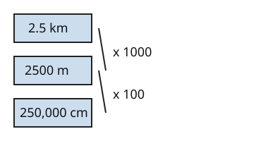

Part of Metric Conversions. Answer in the chat (1: ..., g: c), add sure or guess after any answer, and say done when finished.
Help is down to 2, since you passed 03 and 04 first try: an outline and a picture, no worked example.
R1. How many centimetres are in 6 m?
6 x 100 = 60 (sure)
R2. How many metres are in 720 cm?
72,000, there are 100 cm in a metre so you times by 100 (sure)
Last time: a run is 2.5 km long. How many centimetres is that? You said a) 2500. It is c) 250,000.

Your 2500 is right, but it is in metres. Km to cm crosses two steps, so take both (notes 5):
Or multiply the factors first: a km holds 1000 x 100 = 100,000 cm, and 2.5 x 100,000 = 250,000.
Q1. A path is 0.4 km long. How long is it in centimetres?
40,000 (sure)
Q2. In your own words: why can you multiply 1000 by 100 and go straight from km to cm?
each km is 1000 m and each of those metres is 100 cm, so one km is 1000 lots of 100 cm, which is 100,000 cm (guess)
Q3. Mia says 60,000 mm is 60 km, since milli and kilo both mean 1000. What is wrong?
milli is a thousandth of a metre and kilo is 1000 metres, so mm to km is two steps. 60,000 / 1000 = 60 m, then 60 / 1000 = 0.06 km